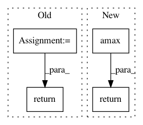

bb9f5f36c24eaa5cb320c9ef157cc9fbed295b10,spynnaker/pyNN/models/neuron/synapse_dynamics/synapse_dynamics_stdp.py,SynapseDynamicsSTDP,get_weight_maximum,#SynapseDynamicsSTDP#Any#Any#,404
Before Change
@overrides(AbstractPlasticSynapseDynamics.get_weight_maximum)
def get_weight_maximum(self, connector, weights):
w_max = super(SynapseDynamicsSTDP, self).get_weight_maximum(
connector, weights)
// The maximum weight is the largest that it could be set to from
// the weight dependence
return max(w_max, self.__weight_dependence.weight_maximum)
def get_provenance_data(self, pre_population_label, post_population_label):
prov_data = list()
if self.__timing_dependence is not None:
After Change
self.__backprop_delay = backprop_delay
def is_same_as(self, synapse_dynamics):
// pylint: disable=protected-access
if not isinstance(synapse_dynamics, SynapseDynamicsSTDP):
return False
return (
self.__timing_dependence.is_same_as(
In pattern: SUPERPATTERN
Frequency: 3
Non-data size: 4
Instances
Project Name: SpiNNakerManchester/sPyNNaker
Commit Name: bb9f5f36c24eaa5cb320c9ef157cc9fbed295b10
Time: 2019-10-28
Author: andrew.gait@manchester.ac.uk
File Name: spynnaker/pyNN/models/neuron/synapse_dynamics/synapse_dynamics_stdp.py
Class Name: SynapseDynamicsSTDP
Method Name: get_weight_maximum
Project Name: mittagessen/kraken
Commit Name: 4f35ee23064994397d73cc814ceaf39078b8d60d
Time: 2015-12-21
Author: mittagessen@l.unchti.me
File Name: kraken/linegen.py
Class Name:
Method Name: degrade_line
Project Name: IBM/adversarial-robustness-toolbox
Commit Name: 8419573121ddaf8b3da353da365479e3740cdebf
Time: 2020-02-20
Author: beat.buesser@ie.ibm.com
File Name: art/utils.py
Class Name:
Method Name: is_probability